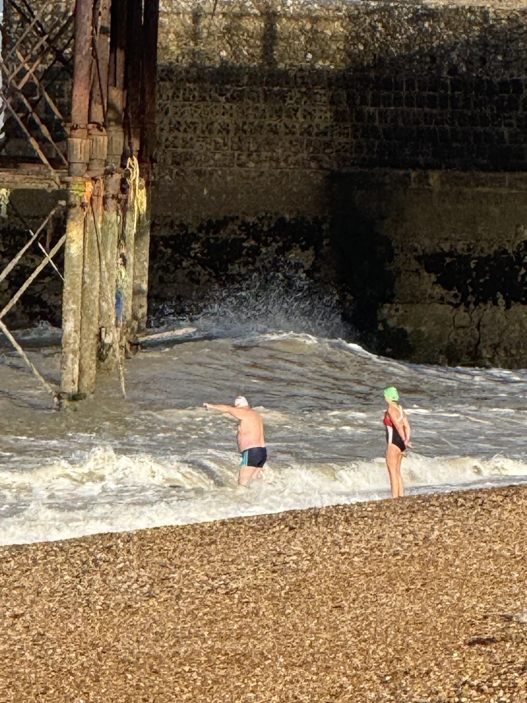

TRAVEL VOL.01
UK · DENMARK · NETHERLANDS
Year 2026 in UK, DK and NL
Photographed by Wani and Fibi

03—15 JUNE 2026
Travel Vol.01
A photographic record of our journey through the United Kingdom, Denmark and the Netherlands — places, people, small moments, and the details we wanted to keep.
PHOTOGRAPHY
75 photographs
PLACES WE HAVE BEEN
World Map
26 CITIES
DRAG TO EXPLORE · SELECT A POINT
MAP DATA: NATURAL EARTH · PUBLIC DOMAIN
ABOUT
Fibigraphy is our shared travel and photography archive. Photographs first, words when they matter, and enough white space for both to breathe.